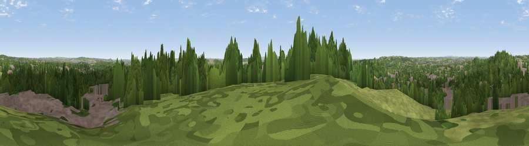

Viewpoint near Bramcote
#23868 in England · top 34% of its area beats it · near BramcoteWhere it is
The exact computed spot (SK 50725 37525). Click the marker for map links.
The view, rendered

A 360° render of this exact spot computed from the terrain model, tree cover and land cover — summer colours, afternoon light, calibrated against photographs of famous viewpoints. Real trees, hedges and buildings will differ in detail.
The panorama
Grey silhouette: terrain skyline in each direction (720 bearings, Earth curvature and refraction included). Dashed green: skyline with trees (+15 m) and buildings (+8 m) as obstacles. Blue strip: how far the ground is visible on each bearing.
Where the view opens
Wedge length = distance to the farthest visible ground on that bearing (vegetation-aware). Rings at 10, 25 and 50 km.
What fills the view
47% woodland · 28% built-up · 20% grassland · 5% cropland
Angular shares of the visible panorama (visual magnitude), not map area. Landscape diversity 0.53 (0–1 Shannon).
Key numbers
More beautiful places nearby
The staircase of upgrades: each row has a higher view potential than everything closer. Driving times are estimates from straight-line distance, calibrated against real road routing — check an actual route before setting out.
| Place | Direction | Drive | Score |
|---|---|---|---|
| Bramcote Hill | NNW · 1 km | ~3 min | 56.0 |
| Viewpoint near Stanton by Dale | W · 4 km | ~9 min | 58.4 |
| Viewpoint near Strelley | N · 4 km | ~9 min | 62.6 |
| No Man's Lane | W · 5 km | ~11 min | 65.8 |
| Viewpoint near Hazelwood | WNW · 19 km | ~32 min | 66.3 |
| Ives Head | S · 21 km | ~35 min | 73.3 |
| Viewpoint near Woodhouse Eaves | S · 23 km | ~38 min | 77.7 |
| Viewpoint near Mow Cop | WNW · 68 km | ~91 min | 78.9 |
52.93274, -1.24679 · source: screening · position refined by local search. Computed location — check access rights before visiting.